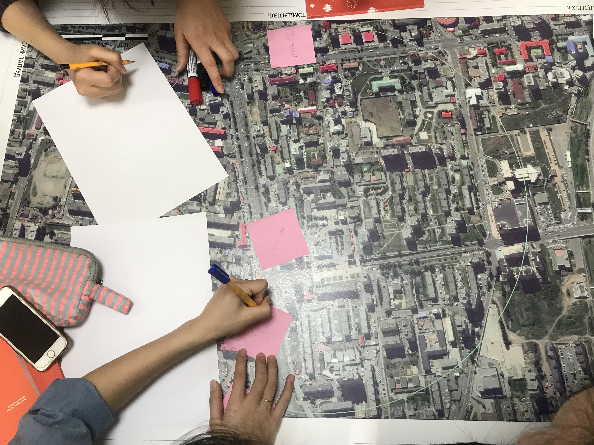
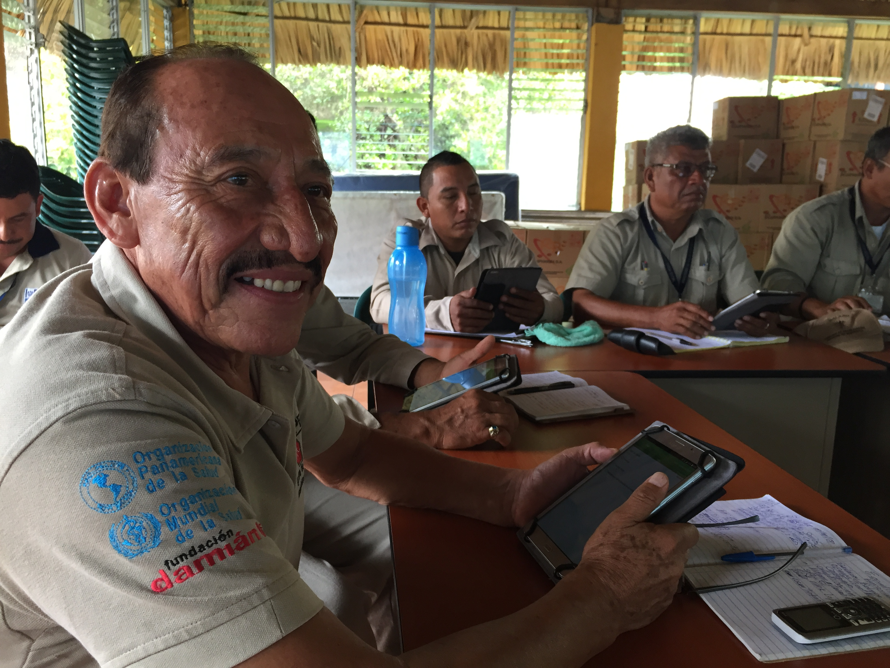

3. Designing an Open Mapping Project
Designing and implementing an open mapping project can be complex, especially if there are ambitious mapping goals or a large group of partners involved. Several resources exist that provide further detail on navigating the mapping process:
- Open Cities Project Guide - the World Bank Global Facility for Disaster Reduction and Recovery (GFDRR) and Humanitarian OpenStreetMap Team (HOT) published a guide that can be downloaded at http://www.opencitiesproject.org/guide/.
- Participatory Mapping Toolkit - Humanitarian OpenStreetMap Team (HOT) published a guide for open mapping projects in the context of refugees. The full toolkit can be downloaded at https://www.hotosm.org/downloads/Toolkit-for-Participatory-Mapping.pdf
Here we provide a brief overview of some of the most important steps.

3.1 Deciding what to map
Once the partners have been assembled, the next step is deciding what to map. This involves answering the following questions about what the project is attempting to accomplish.
- Purpose and audience: All data collected needs to fulfill a specific purpose with an intended use case and/or audience. This not only defines the scope of the project and data collected but helps ensure that the data collection process is ethical and limits the burden on individuals and communities being surveyed, even if indirectly. A helpful way to think about this to ask, what problem is this project seeking to address or what question(s), or SDG indicator(s), are we hoping this data will answer once it has been collected?
- Geographic extent: Does this mapping project involve gathering information about a city, a neighborhood, a whole country? Do the questions that the project needs answering logically connect to a particular administrative scale? Or another sort of boundary?
- Features: What, within the geographic extent, needs to be mapped? Roads? Buildings? Particular kinds of buildings such as schools or health facilities? Is there other information such as land-use or natural features like rivers and forests that will also require mapping?
- Attributes: What information about each feature will the team collect? For example, is knowing the width or surface of roads important to the questions the project seeks to answer? The number of stories of each building? The number of beds in each hospital?
The answers to these questions will help determine if there are any existing datasets that could be used and the amount of time and resources necessary to complete the project. In some cases, it can be helpful to run a small pilot project in order to determine the best approach to data collection and develop an estimate of the level of effort required.
To collect good data you need to employ a well-defined data model. A data model reflects the information you want to capture. Example SDG data models for OpenStreetMap can be found in Part 4. After establishing a solid data model, it is important to create logical Field Data Collection Forms that capture the data you are looking for in the best way.
3.2 Planning and Preparation
Before laying the groundwork for a field mapping project, there are several factors that you and your team should consider. Below are a selection of factors and questions that should be asked in preparation for dealing with them.
Political Climate:
- Government support - If a non-governmental organization, does local, regional, and national government support humanitarian activities in the area? Governments may either support or oppose humanitarian organizations within their country.
- Hostile activity - Is the area experiencing violence or hostile events? Is this activity involve groups similar to your own? Is this a secure environment to conduct your work? A hostile climate can make it extremely difficult to carry out operations.
Communication
- Infrastructure – Is there a foundation of technology that supports an organization? This can be related to actual hardware, software, networks, data centers, or the presence of electricity.
- Imagery Available – Is there good quality, high-resolution imagery available, from satellites or other sources? Using aerial imagery as a background layer is considered to be the easiest way to map, particularly when many buildings need to be digitized.
- Internet Access – Is there an Internet connection? What is the amount of bandwidth or level of connectivity? Many tools rely on Internet access. If you don’t have an Internet connection, a POSM may be a potential solution.
- Smartphones – Does the community have smartphones? Though not essential by any means, mobile data collection is a recommended method of field mapping and is done using smartphones.
Literacy
- Map Literacy – Are communities aware of the basic conventions of maps, can they read them, and do they use them?
- General Literacy – Does the community have the ability to read and write? Higher educational levels can assist the mapping process.
Accessibility
- Terrain Accessibility – Are areas you want to map physically accessible?
- Transportation – How will you reach the site? Is there public transportation or do you need to hire vehicles?

3.3 Coordinate with the local administration of the area you will be mapping
In many cases, mapping teams will need to carry an authorization letter or another form of permission from local officials to show credibility and to reduce potential conflict that could arise during the field data collection. We recommend that organizations and communities should request this letter from the appropriate authorities well ahead of planned mapping activities to reduce the risk of delay.
Identifying and contacting partner organisations working locally in the area that you are planning to map is critical to ensuring local buy-in, project success, and sustainability. While contacting these can be done via email or a letter detailing your intent, in-person meetings have more weight and provide opportunity to develop a stronger relationship.
3.4 Building a Mapping Team
In most cases, non-governmental organizations and governmental agencies will draw mappers from within their own teams. However, organizations should consider the benefits of bringing in mappers from partner organizations and local communities. When working within refugee environments, it is especially important to consider incorporating refugees (and host community members) into the mapping process. By incorporating local communities, beneficiaries, and partners in the mapping team, participatory mapping activities:
- Increase local buy-in and representation
- Allow communities to directly represent their needs and values
- Incorporate local knowledge and perspectives that might not otherwise be accessed
- Empower local community members with skill development
When deciding what individuals to work with, the following factors should be considered:
Community – Active participation by the affected population is essential to providing assistance that best meets their needs. The first criteria for participant selection is being from the local community. Non-governmental organizations should also consider integrating local and/or national government staff to increase buy-in and data use. Government organizations conducting mapping and survey activities should consider incorporating staff typically outside of geospatial activities as well as staff from non-governmental partner organizations. Regardless, participation from the affected population should be of the highest priority.
Motivation – Participants should have strong reasons for working. Motivations vary, but one of the strongest factors is being emotionally invested in a project. Feeling like you are making progress in meaningful work is a powerful motivator.
Non-Discrimination – no one should be discriminated against on any grounds of status, including age, gender, race, color, ethnicity, sexual orientation, language, religion, disability, health status, political or other opinion, national or social origin. None of these should be criteria in determining participants. Take into consideration pre-existing social, cultural and political dynamics or practices that may marginalize or exploit certain groups
Payment – As a general rule it is good practice to cover costs of active participants. For example, if volunteers join your team as field mappers they should be paid per diems to cover transportation and food. Projects rely on the data these volunteers collect, so it is an integral part of the work and should not be treated lightly. Of course unpaid volunteers can and should also be active participants, but organizations must judge when the line is crossed into work to avoid exploitation. Lastly, be mindful that even seemingly small payments can affect power dynamics in refugee communities and households.
Gender – Organizations should be sensitive to gender but avoid using it as criteria to determine participants, aligned with the non-discrimination principle. Within families, paying one member but not another can have unintended consequences - either positive or negative.
Training Your Team - Questions to consider when training your team:
- What is the technical literacy of team members? Certain groups will require longer lengths of time to learn an application or tool than others.
- What tools will you be using? The tools you use will determine the length of time and skill level demanded of your team. Additionally, the number of tools you plan to train team members in impacts the length of training and time necessary to master a skill or tool.
- Will you be able to have hands-on and field training? Training teams in tools using hands-on approaches, including conducting trial fieldwork greatly increases the success rate of mastery and improves data quality. All trainings should incorporate a practical session if possible.
- Will you have consistent access to internet and electricity? Some tools require internet and computer use for training.

3.5 Logistics
There are many components to managing logistics for field operations. The topics listed below are just a few components that we recommend all organizations and communities consider prior to starting field mapping activities.
Workspace / Meeting space
- Do your operations require a workspace or meeting place?
- Does your operations require a central base with full-day access and wi-fi?
Equipment
Different scopes of work will require different types of equipment. For example, ODK and Kobo software can run on most Android devices, but OMK software requires higher specifications.
- What type of mobile devices will you use to collect data? (Mobile phones, tablets, GPS devices, etc.)
- Does everyone on the team have access to data collection devices?
- Does everyone on the team have access to computers/laptops? Or will the team plan to work in shifts?
Transportation
- How will mappers move around in the field?
- Is the scope of work/area of interest large enough that mappers will need transportation beyond walking?
- What types of transportation are available?
- What types of transportation are safe for the context and circumstances?
- Will this type of transportation have associated costs? (i.e. driver fees, rental, fuel)
Safety & Security
Each context is so different that it is difficult to make specific recommendations for safety. Communities and organizations conducting mapping activities should establish contingency plans to address the different types of security incidents that may occur. Team members should coordinate all responses to such incidents so as to safeguard the rights and well-being of local community members, and ensure that staff members and volunteers are not put at risk.
For operations, the key to effective safety and security management is the creation of a culture of security. Each staff member and volunteer has a responsibility for their own safety and security, and that of other team members.
Please note: The below topics are suggestions for mapping teams to consider when building and discussing security plans for mapping activities, and is in no way comprehensive.
- Personal Security - What is the appropriate behavior, dress code, language, and forms of communication when interacting with local communities and other stakeholders? Does everyone on your team understand these factors?
- Legal requirements - Do you have a letter of permission to conduct field activities? Does your team understand local laws and customs?
- Communications - Do you know which communication networks are best for your area of work? Have you provided all team members with internal and external contact details? Have you developed and communicated contingency plans to your team? Does your team have a method for reporting incidents and do team members know how to use it?
- Travel - What types of travel will be required for this work? What attire, visibility, documentation is necessary for travel? What types of risks (i.e. crime, accidents) are teams exposed to?
- Common Crime - What types of crime are common in the area of work? What is the frequency and occurrence of crime?
- Medical Emergencies - Are managers and supervisors aware of team members’ pre-existing medical conditions? Does everyone on the team know or have access to information on the location and contact information for local health facilities and emergency services? Do all teams have access to a first aid kit? Is someone on each team trained in first aid?

3.6 Community Entry
Community entry is the process of initiating, nurturing and sustaining a relationship in order to secure a community’s participation and interest in a program. Whether preparing to engage with refugee and host communities in a settlement setting or local communities in a capital city, there are a few recommendations and practical questions that can guide your team in mindfully establishing a relationship with a given group and setting the stage for activity implementation in a community.
The most important thing to keep in mind is how individuals can be part of the work as members of projects. They must be given ownership. Before starting a project, objectives and strategy should be shared with community members. They should give feedback, and this should be incorporated. If certain members of the community are not given roles in the project, both in terms of strategy and implementation, you may face problems down the road.
In the context of working with refugees, for example, who are used to seeing new projects with skepticism, it is especially important that your approach to engage with and inform these groups of the upcoming work is prioritized over activity implementation and achieving results. Many organizations and individuals use humanitarian crises as opportunities to exploit people – whether deliberately or through incompetence. It is crucial to build trust and respect between the organization and community. Though protected under international law, refugees in host countries are subject to municipal and national authorities. The presence of refugees can put pressure on host communities, which often fuels prejudice. Therefore, the final aspect of successful community entry is taking into account the host community’s concerns.
A few practical questions can guide us in appropriately engaging with local communities for the first time:
- Who needs to be informed about your intent to enter a community?
- What documents do you need before entering a community? Permission may include permits or a letter of permission from local authorities acknowledging your presence and activities in the community.
- How can specific groups or individuals in the community be involved in the project?
- What is the most appropriate way of communicating about roles and responsibilities for a project to these groups?
- Where can you seek information about the dynamics between groups in a given community? How do you ensure you understand tensions or conflicts between groups you intend to work with?
- What measures are in place to mitigate or manage - if any - conflicts arise?
- Example: In the context of working with refugee and host communities, are you confident there will not be any resentment between groups working on the same project?
Other practical recommendations to ease your organization’s entering into a new community:
- Set up consultation meetings with relevant leaders and community members to gather feedback about proposed activities and timeline
- Articulate benefits of projects involvement to all who are involved
- Include a community member - who is familiar with local laws and customs - in your project team
- Establish relationships and work through partners already based in the community to ease activity implementation and enable integration into existing initiatives
- Create a Whatsapp group to enable direct and more efficient communication